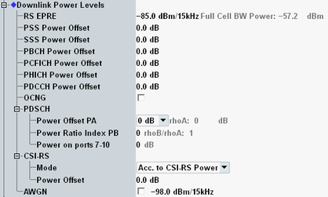

This section defines power levels of physical downlink channels and physical downlink signals.
The parameters in this section can be changed in all main connection states including "Connection Established".
For carrier aggregation scenarios, you can configure the settings per component carrier.
For background information, see also "Physical DL Channels and Signals".

The reference point for all power settings in this section (except AWGN) is the simulated eNodeB antenna. For scenarios with several RF output paths per component carrier, there is a simulated radio channel between the eNodeB antennas and the RF output connectors. The power at each single connector can be lower than the power at the eNodeB antenna.
Defines the energy per resource element (EPRE) of the cell-specific reference signal (C-RS). The RS EPRE corresponds to the DL power averaged over all resource elements carrying cell-specific reference signals within one subcarrier (15 kHz).
The "Full Cell BW Power" resulting from the RS EPRE is also displayed. It is calculated assuming that the full DL cell bandwidth is used (all subcarriers) and all power offsets equal 0 dB.
Remote command:Power level of a primary synchronization signal (PSS) resource element relative to the RS EPRE.
Remote command:Power level of a secondary synchronization signal (SSS) resource element relative to the RS EPRE.
Remote command:Power level of a physical broadcast channel (PBCH) resource element relative to the RS EPRE.
Remote command:Power level of a physical control format indicator channel (PCFICH) resource element relative to the RS EPRE.
Remote command:Power level of a physical hybrid ARQ indicator channel (PHICH) resource element relative to the RS EPRE.
Remote command:Power level of a physical downlink control channel (PDCCH) resource element relative to the RS EPRE.
Remote command:Enables or disables the OFDMA channel noise generator (OCNG).
When the OCNG is enabled, it uses all not allocated resource blocks (RB) of the cell bandwidth, so that the full cell bandwidth is used. Example: if for a bandwidth of 10 MHz only 16 RBs are used by the RMC, the remaining 34 RBs are used by the OCNG.
The power level of the OCNG is chosen automatically so that the displayed "Full Cell BW Power" is reached. Thus the overall DL power is constant in each transmission time interval.
Remote command:These parameters define the power level of the physical downlink shared channel (PDSCH).
- For transmission modes using an antenna port in the range 7 to 10, the configured antenna port power and the configured power ratio index are used. The power offset PA is configurable, but it is only signaled to the UE. It is not used for downlink power calculation.
- For transmission modes not using these antenna ports, the configured power offset PA and the configured power ratio index are used.
- ρA ("rhoA") if no RS resource elements are transmitted simultaneously on other subcarriers
- ρB ("rhoB") if RS resource elements are transmitted simultaneously on other subcarriers
- PA = ρA
- PB = 0, 1, 2, 3 corresponds to the following ρB/ρA values:
– 1, 4/5, 3/5, 2/5 for single TX antenna configurations – 5/4, 1, 3/4, 1/2 for multiple TX antenna configurations
The displayed ratios "rhoA" and "rhoB" are calculated from the configured settings.
Remote command:These parameters define the CSI-RS power offset for TM 9.
"Acc. to CSI-RS Power" | The used power offset matches the signaled value. The parameter "Power Offset" is ignored. For configuration of the signaled value, see "CSI-RS Power". |
"Manual" | The used power offset is configured via the parameter "Power Offset". The setting is independent from the signaled power offset. |
Total level of the additional white Gaussian noise (AWGN) interferer in dBm/15 kHz (the spectral density integrated across one subcarrier). If enabled, the AWGN signal is added to the DL LTE signal for the entire cell bandwidth.
For fading scenarios, this parameter is disabled, so that AWGN cannot be added by the signaling unit. Instead AWGN can be added by the fader (external or internal).
The reference point for this power setting is the RF output connector.
Option R&S CMW-KS510 required.
Remote command: